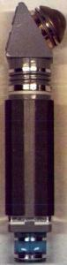

Hypospray |
|  |
Apparecchio portatile utilizzato da tutto il personale della Flotta Stellare per somministrare farmaci per via intramuscolare o sottocutanea a varie razze umanoidi. Lo strumento inietta il medicamento utilizzando una aerosospensione molto fine con una pressione moderatamente elevata, che evita di forare la cute del malato per somministrare il farmaco.